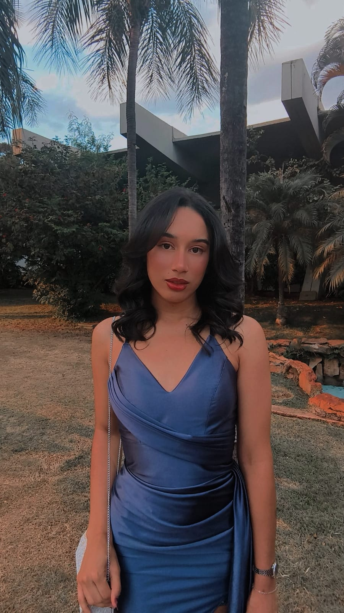

Consulta nutricional individual
Um momento para conhecer sua história, entender suas necessidades e definir objetivos realistas.
NUTRIÇÃO INDIVIDUALIZADA
Um acompanhamento nutricional que respeita sua história, sua rotina e seus objetivos. Sem fórmulas prontas: cuidado construído junto com você.
Agendar uma conversa ↗

ESCUTA • CIÊNCIA • ACOLHIMENTOPRAZER, SOU A LAURA
Acredito que a alimentação deve ser uma aliada, não uma fonte de culpa. Meu trabalho é ajudar você a construir uma relação mais consciente, leve e possível com a comida.
Cada pessoa tem uma história, necessidades e desafios próprios. Por isso, o cuidado começa pela escuta e se transforma em estratégias individualizadas, respeitando seu momento e sua rotina.
CUIDADO PERSONALIZADO
O acompanhamento é construído de acordo com seus objetivos, necessidades e possibilidades.
Um momento para conhecer sua história, entender suas necessidades e definir objetivos realistas.
Uma análise individual para compreender seu contexto e orientar o cuidado nutricional.
Estratégias alimentares adaptadas à sua rotina, preferências e objetivos.
Suporte ao longo do processo para avaliar avanços e ajustar o planejamento quando necessário.
O melhor plano alimentar é aquele que respeita quem você é e funciona na sua vida.
✳SEU PRÓXIMO PASSO COMEÇA AQUI
Entre em contato para tirar dúvidas e conhecer as possibilidades de acompanhamento.
Conversar pelo WhatsApp ↗ +55 (61) 99159-2140